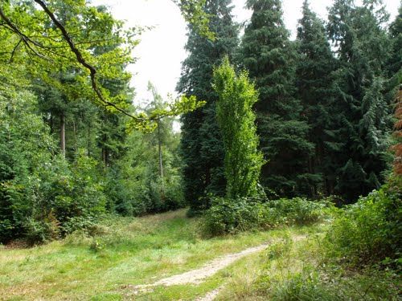

Location
|
We will stay at Conference Centre De Werelt in Lunteren. The conference centre is nicely situated in a small forest (the Luntersche Buurtbosch) in the western part of Gelderland and is easily accessed by public transportation. A full route description to the conference centre can be found here. Adress
|
 |